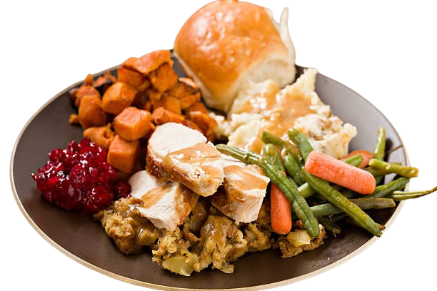
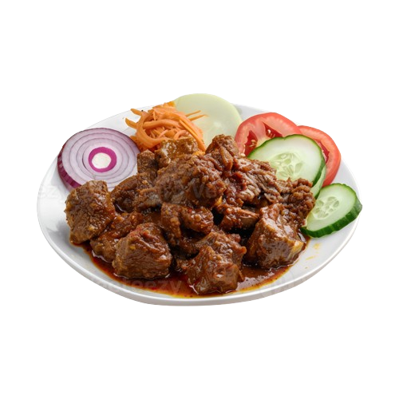
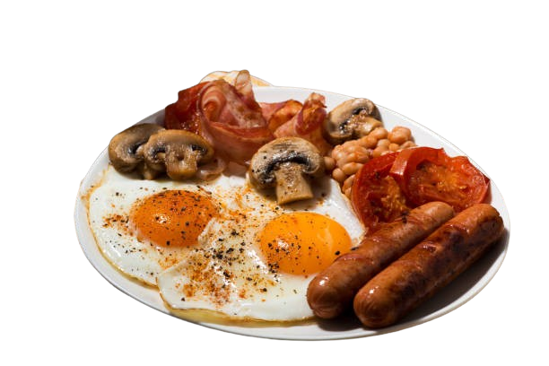
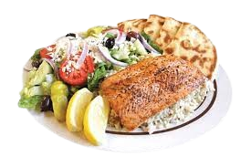
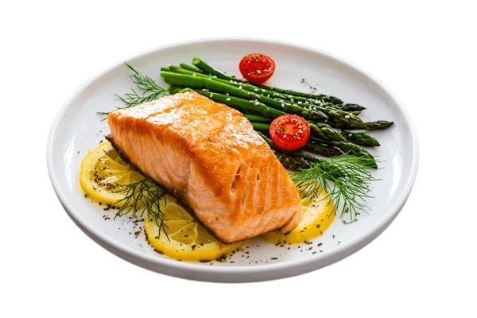
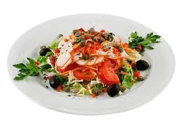

Makan Enak #dirumahAja
CookBookKu, Buku Resep Harian Mu
Buatlah hidangan lezat dengan mudah menggunakan resep dari para chef terkenal. Temukan berbagai resep mulai dari masakan rumahan hingga hidangan internasional yang akan memanjakan lidah Anda setiap hari.
Chef Yang Bekerjasama

Junior John Rorimpandey
Junior John Rorimpandey, yang dikenal sebagai Juna Rorimpandey atau Chef Juna adalah seorang jurutama masak dan koki selebritas berkebangsaan Indonesia. Juna merupakan koki dengan spesialisasi dalam masakan Jepang dan masakan Prancis yang ia pelajari ketika tinggal selama 12 tahun di Amerika Serikat.

Renatta Moeloek
Chef Renatta adalah alumni Le Cordon Bleu Paris dan dikenal dengan spesialisasi masakan Perancisnya.Tak heran, chef Renatta Moeloek ini pernah bergabung di sebuah restoran dengan Michelin Star di Paris, Perancis. Ia kembali ke Indonesia untuk membuka layanan makan malam pribadi dan restoran yang berfokus pada kesehatan. Kemudian dirinya menjadi chef Indonesia yang terkenal sejak muncul sebagai juri Master Chef Indonesia.
Dims The MeatGuy
Dimas Ramadhan Pangestu, atau yang lebih dikenal sebagai Dims the Meatguy, adalah seorang jurutama masak (chef) dan pengusaha yang sukses. Meskipun ia tidak memiliki gelar formal seorang chef, ia memulai karirnya sebagai kreator konten memasak daging, dan kesuksesannya membawanya mendirikan Meatguy Steakhouse serta terpilih menjadi juri di World Steak Challenge.

Devina Hermawan
Devina mulai dikenal secara luas sejak ia mengikuti acara televisi MasterChef Indonesia (musim kelima).Setelah MasterChef, Devina mulai aktif membagikan video resep dan tutorial memasak di kanal YouTubenya yang dikenal dengan ciri khas "tips & tricks" dan metode anti gagalnya.
Menu Yang Bisa Dibuat
Makanan
Makanan
Makanan
Makanan
Makanan
Makanan
Makanan
Makanan
Makanan
Makanan
Makanan
Makanan
Makanan
Makanan
Makanan
Makanan
Resep Makanan
- - Tisu kasar
- - Wajan
- - Pisau
- - Talenan
- - Potongan daging ribeye seberat 200-300gram
- - Kosher salt
- - Lada hitam freh grind
- - Minyak
- - Salted butter
- - Bawang putih
- - thyme
- - Tap tap potongan steak dengan tisu kasar agar daging kering
- - Beri bumbu pada potonga steak dengan kosher salt dan lada hitam fresh grind
- - Pastikan wajan sudah panas sampai mengeluarkan uap lalu masukkan minyak
- - Masak steak sampai sedikit kecoklatan lalu basting steak dengan thyme, bawang putih, dan salted butter.
- - Setelah itu, resting steak kurang lebih 5 menit agar otot daging tidak kaku
- - Mangkuk untuk menampung ayam
- - Blender
- - Wajan
- - Rubber spatula untuk mengaduk ayam
- - Spatula
- - Kuas
- - Capitan
- Bahan Marinasi
- - 2 ekor ayam, potong 4 bagian
- - 2 buah jeruk nipis
- - 1 sdt garam
- - 1 sdt kaldu
- - 8 sdm kecap manis
- - 2 sdm air asam jawa, opsional
- Bahan Bumbu Halus
- - 8 siung bawang putih
- - 10 siung bawang merah
- - 4 butir kemiri
- - 6 cm kunyit
- - 6 cm lengkuas
- - 3 buah cabai merah tanjung / 8 buah cabai keriting
- - 1 sdt ketumbar sangrai
- - 1 sachet terasi
- - minyak secukupnya
- - Masukkan garam secukupnya dan perasan jeruk nipis ke dalam ayam, aduk rata. Diamkan 5-10 menit lalu bilas, tiriskan.
- - Masukkan kecap manis, air asam jawa, garam, dan kaldu bubuk, aduk rata, tutup dengan plastik wrap lalu diamkan 3-4 jam atau semalaman di dalam kulkas.
- - Haluskan bawang putih, bawang merah, kemiri, lengkuas, kunyit, ketumbar, terasi, cabai merah, dan sedikit minyak dengan blender lalu tumis hingga setengah matang.
- - Masukkan serai, daun salam, merica, dan margarin tumis hingga matang kemudian masukkan ayam, aduk rata.
- - Tambahkan air, kecap manis, garam, kaldu, dan gula pasir masak hingga meresap di api sedang selama 25 menit, tiriskan.
- - Sisihkan bumbu ungkepan ke dalam mangkuk lalu campurkan dengan margarin, aduk rata.
- - Panaskan wajan, masukkan ayam lalu oles dengan bumbu oles, panggang hingga matang.
- - Untuk oven atau air fryer, panggang ayam dan terong yang telah dioles bumbu di suhu 170 derajat celcius selama 15 menit.
- - Ayam bakar kecap siap disajikan dengan pelengkap